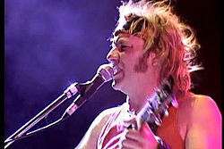

Chizzo empezó a tocar guitarra a los 14 años, con una acústica que se había comprado trabajando de plomero. Después probó la eléctrica a los 15. Su primera banda la formó con compañeros de la secundaria y se llamó "Origen". Dice Chizzo: "Nos juntábamos con algunos compañeros de la secundaria a tocar todos los fines de semana. Un día, de pasada al colegio, conocí a un grupo de pibes que se juntaba en la esquina de la calle Homero y Garzón a tocar la guitarra, de esos encuentros surgió el primer proyecto que se llamó Origen". Después de Origen, surgió "Industrial", en donde tocaba con otros amigos de la nocturna. Como este proyecto también se disolvió, un amigo le presentó a un tal Raúl de Mataderos, y ahí surgió "Cólera". Esta banda se disolvió cuando Gustavo hizo el servicio militar obligatorio de esa época. Cuando salió de la colimba, Raúl lo buscó y le presentó a Tete (Gabriel Iglesias), y este trajo como baterista a su hermano el Tanque (Jorge Iglesias). Hacia fines del 1988, Chizzo, Locura (Raúl Dilelio), Tete y Tanque decidieron juntarse para festejar la noche de año nuevo tocando en el barrio de Parque Avellaneda, en el pasaje León Pinelo, entre las calles Garzón y San Pedro. Esa noche fue la génesis de lo que llamarían, tiempo después, La Renga.
